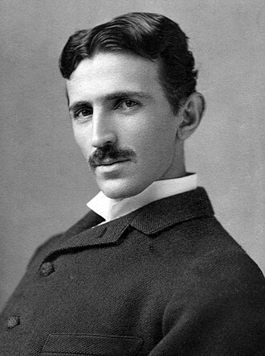

Хронология открытий
- 1900-е: Первые успешные полеты на самолете.
- 1920-е: Активное развитие радио и телевидения.
- 1960-е: Первый выход человека в открытый космос.
- 1990-е: Появление и распространение Интернета.
Известные ученые

Никола Тесла
Сделал огромный вклад в развитие электротехники и радиотехники в начале XX века.